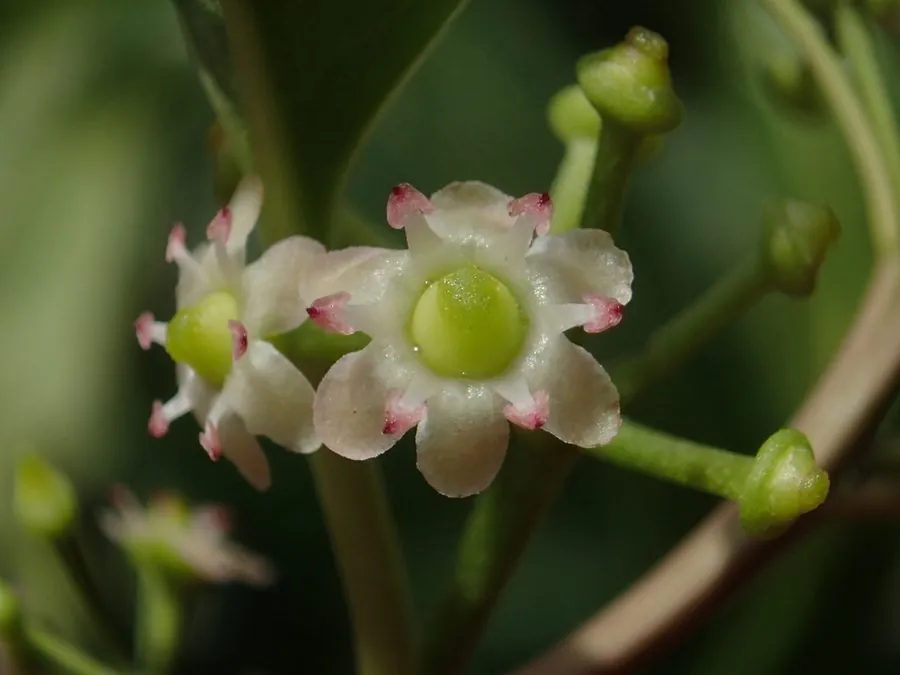

灌木与花木 · 植物界
铁冬青 Ilex rotunda

冬青科常绿乔木或灌木，秋季结红色果实，经冬不落，树皮入药，是南方山地与庭院的优良观果树种。
- 分类
- 门被子植物门纲木兰纲目冬青目科冬青科属冬青属
- 栖息环境
- 山坡林下、溪边与庭院，喜温暖湿润
- 地理分布
- 中国长江以南各地；日本、朝鲜半岛有分布
- 保护级别
- 暂无评估；中国未列入国家重点保护野生植物名录
物种志
铁冬青为冬青科冬青属常绿乔木或灌木，高 5–15 米，树皮灰褐色，小枝具棱。叶互生，椭圆形至长圆形，革质，表面深绿色、有光泽，全缘。花小，黄白色，簇生于叶腋，花期 4–5 月；果实为核果，球形，成熟时红色，果期 9–12 月，经冬不落。
铁冬青原产中国长江以南各地，生于山坡林下与溪边，日本、朝鲜半岛也有分布。它喜温暖湿润、半阴的环境，耐寒性一般，适宜疏松肥沃、排水良好的酸性土壤。秋季红果累累、经冬不落，是南方山地与庭院的观果树种；树皮入药称“救必应”，有清热解毒、消肿止痛之效。栽培以播种和扦插繁殖为主，北方盆栽冬季需移入室内。
形态与习性
- 株高5–15 米，树皮灰褐色
- 花期4–5 月，花小、黄白色
- 果期9–12 月，核果红色
- 光照喜半阴，也耐散射光
- 水分喜湿润，忌积水
- 土壤疏松肥沃、排水良好的酸性土
- 主要用途观果、庭院绿化，树皮入药
趣味知识
- 铁冬青的红色果实经冬不落，是南方冬季重要的观果植物。
- 树皮入药称“救必应”，是岭南常用的中药材。
- 铁冬青的木材坚硬，可制器具。
- 它喜酸性土，北方栽培需调节土壤酸碱度。